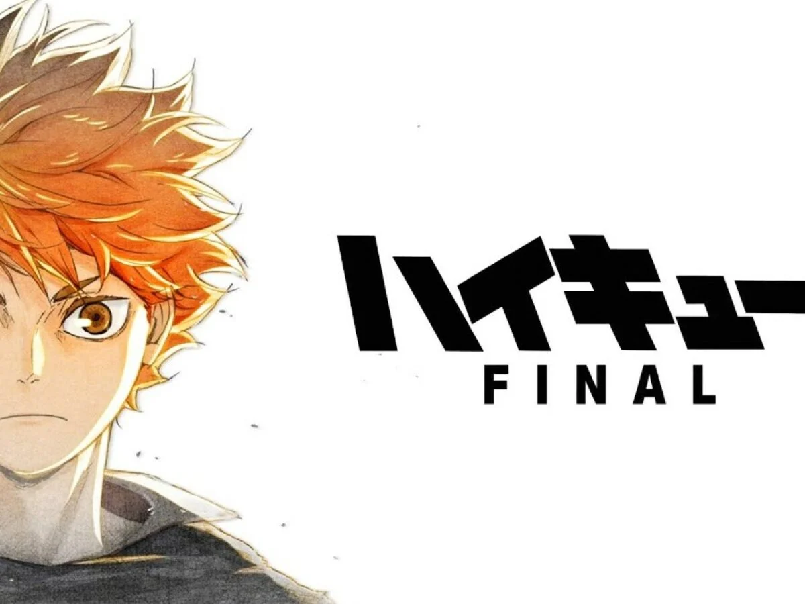

Haikyuu
Haikyu!! (ハイキュー!!, Haikyū!!, from the kanji 排球 "volleyball") is a Japanese manga series written and illustrated by Haruichi Furudate. The story follows Shoyo Hinata, a boy determined to become a great volleyball player despite his small stature. It was serialized in Shueisha's Weekly Shōnen Jump from February 2012 to July 2020, with its chapters collected in forty-five tankōbon volumes.
An anime television series adaptation by Production I.G aired from April 2014 to September 2014, with 25 episodes. A second season aired from October 2015 to March 2016, with 25 episodes. A third season aired from October 2016 to December 2016, with 10 episodes. A fourth season was announced during the Jump Festa '19 and was planned for release in two cours, the first cour of 13 episodes aired from January to April 2020, and the second cour of 12 episodes aired from October to December 2020.